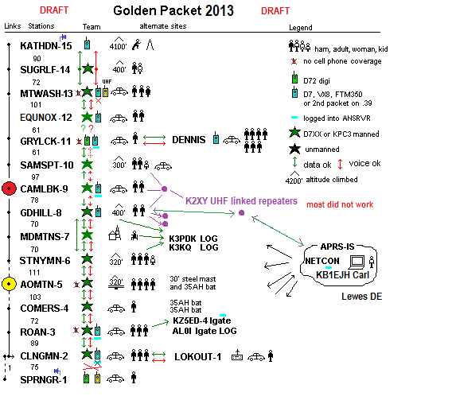

 This is the 2013 report. For the background, see main ATGP page
2013 Results and comments: On 20 July 2013 we had all 15 mountain peaks manned including Canadians on Mt Carrelton in New Brunswick. See the net sketch, at right. and the Planning Sheet. This year the NH Relay location used Mt Equinox. The Northeast had some bad weather with Tim getting pretty well drenched up on Katahdyn. Very quickly most of the Northeast could all see packets from Sams Point (10) to Katahdyn. And similarly down South, most stations could see each other except for Springer Mtn which was also impacted by rain and only got out one packet. Clingman's also had heavy rain. Camelback seemed to have a deaf receiver on 2 meters and never heard any packets from anyone and so the chain was pretty well broken in the middle. Maryland Mountain also had severe VHF RX problems but corrected it by swapping Band A/B on his D710. After action review also revealed that AO Mountain relayed very few packets too, revealing a problem with Receiving, since its own transmitted packet were well received elsewhere. Here is a summary table of the RF link performance Here are the individual reports:
Bob, WB4APR
See my other GENERAL page on APRS applications and Ideas on The AT
Return to The APRS HOMEPAGE or SiteMap.